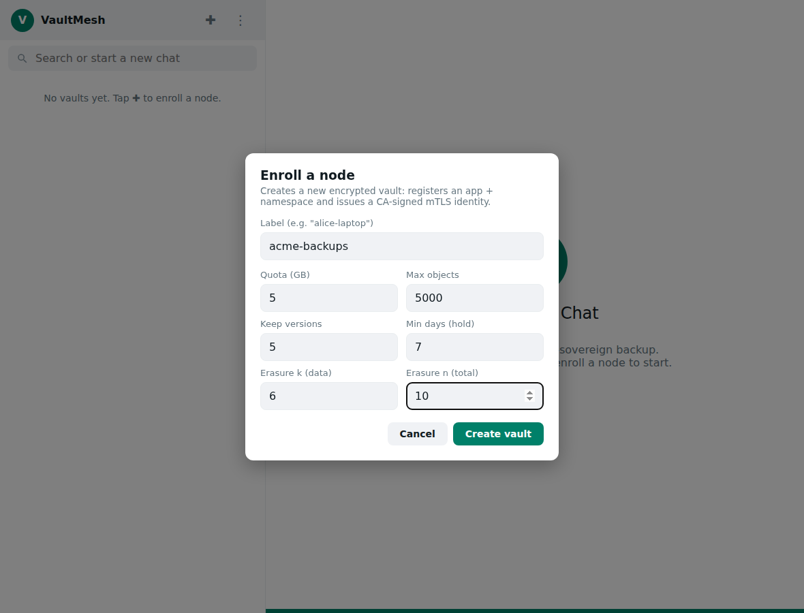
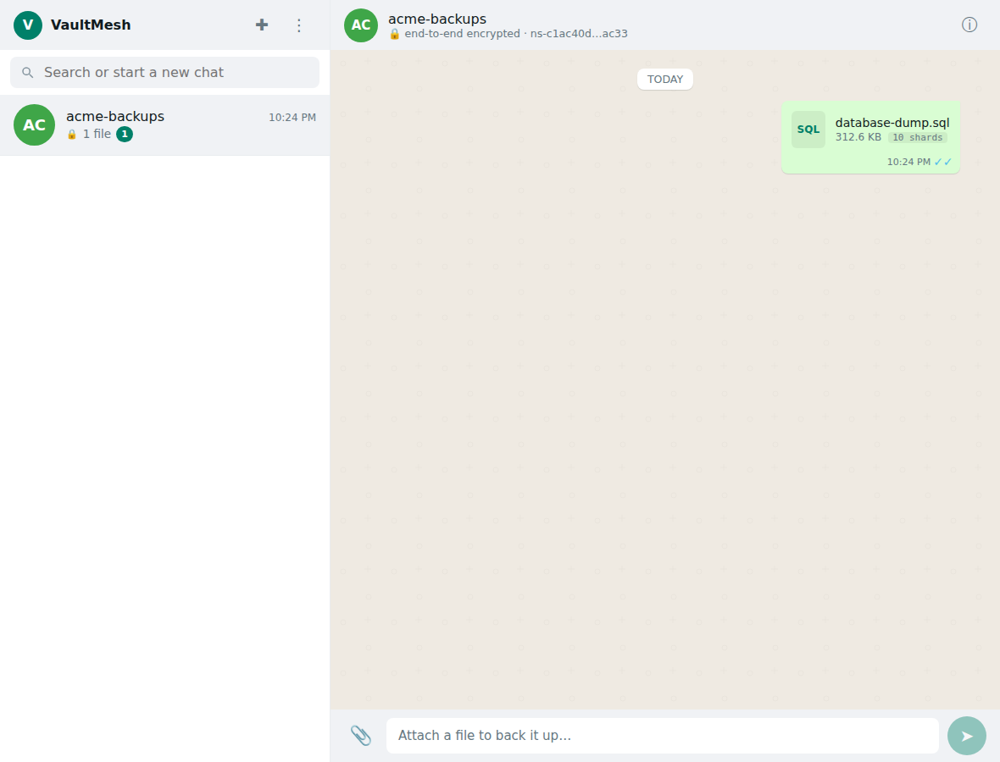
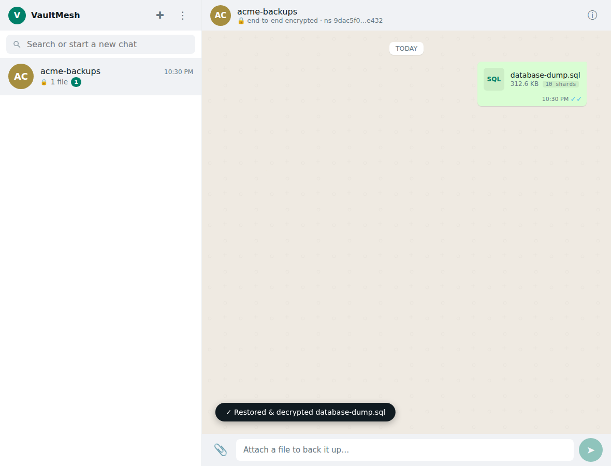
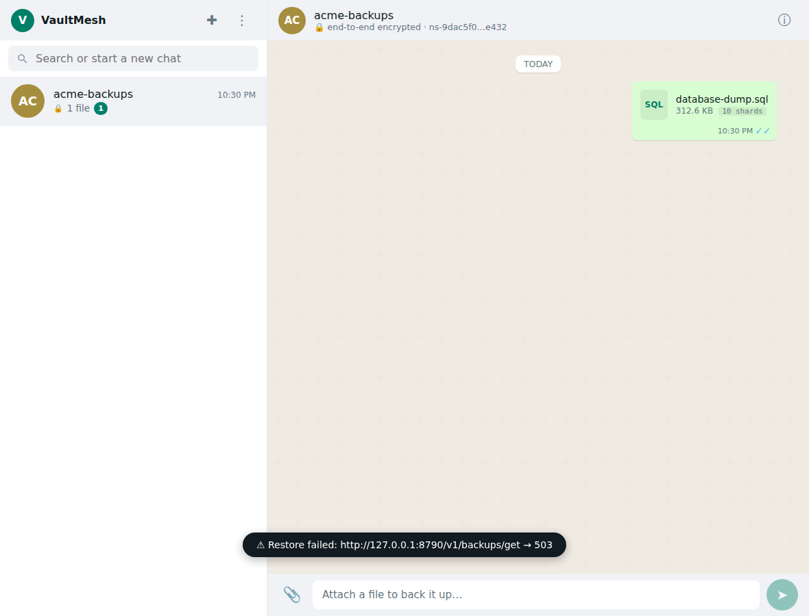
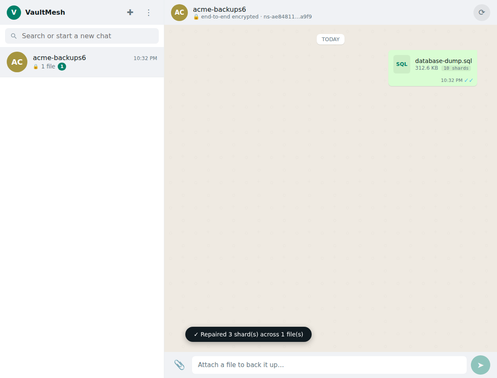
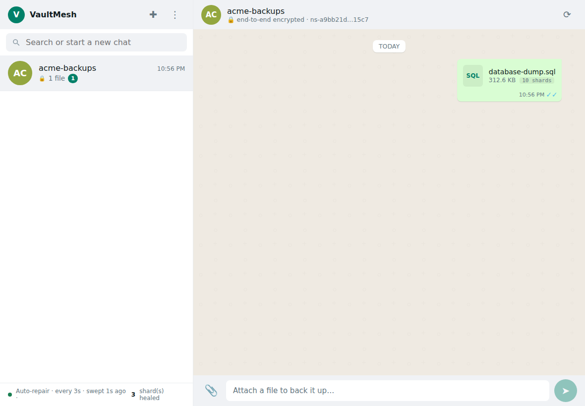
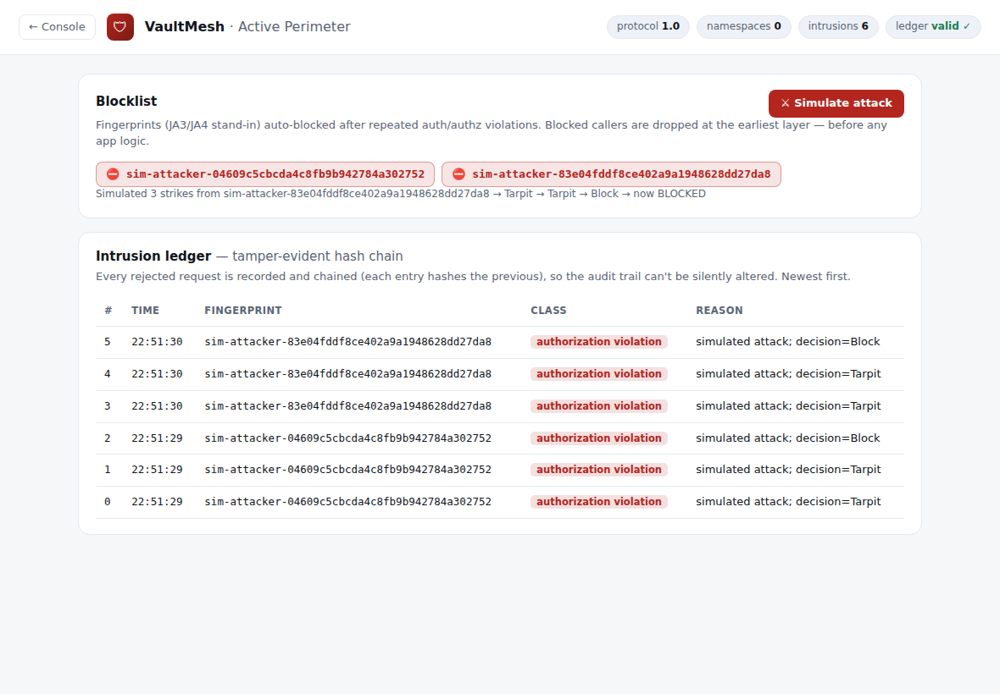

Set the terms once
An app registers with a Contract — quota, retention, and how durably each file is split. You dial it in once; VaultMesh enforces it on every operation after.
verifiedSet 6-of-10 erasure, 5 GB quota, 7-day delete hold in the dialog → written verbatim to the Contract.

Encrypted before it leaves
Attach a file and send it like a chat message. It is encrypted on your device, then split into erasure-coded shards. The server only ever handles ciphertext — no keys, no plaintext, not even filenames.
verifiedA 312 KB file became 10 encrypted shards on disk. The 6-of-10 Contract shaped the split.

Tap to bring it back
Tap the message. The shards are fetched, reconstructed, and decrypted in the browser with your passphrase, then the file downloads.
verifiedRestored byte-identical — sha256 of the download matched the upload exactly.
Lose shards, keep the file
Erasure coding means any k of n shards rebuild the whole. A 6-of-10 file survives losing up to four shards — a dead disk, an offline peer — with nothing lost.
verifiedDeleted 4 of 10 shards on disk. Restore still byte-identical, reconstructed from the surviving 6.

…and it fails honestly
Recovery is guaranteed right up to the threshold — and refuses cleanly past it. No silent corruption, no half a file.
verifiedDelete a 5th shard (5 left, below k=6) and restore returns 503. It recovers to the limit, then stops.

Rebuild the redundancy
Restore gets your data back this time; repair restores the safety margin. It reconstructs missing shards from the survivors — and borrows from a peer if a node has dropped below k.
verifiedLost 3 shards → tapped Repair → rebuilt from survivors. Anchor back to a full set: 10 → 7 → 10.

It heals with no one watching
A background sweep continuously scans every file and restores lost redundancy on its own. Bit-rot and brief outages heal between sweeps — the console shows it happening.
verifiedDeleted 3 shards and walked away. The 3-second sweep healed all 3 automatically — “3 shard(s) healed.”

Attackers get bored, then blocked
Every rejected request is fingerprinted and logged to a tamper-evident ledger. Repeat offenders escalate from tarpit to a hard block — dropped before they reach any app logic.
verified3 unauthorized requests from one fingerprint → tarpit → tarpit → block, chained in a verifiable audit trail.
